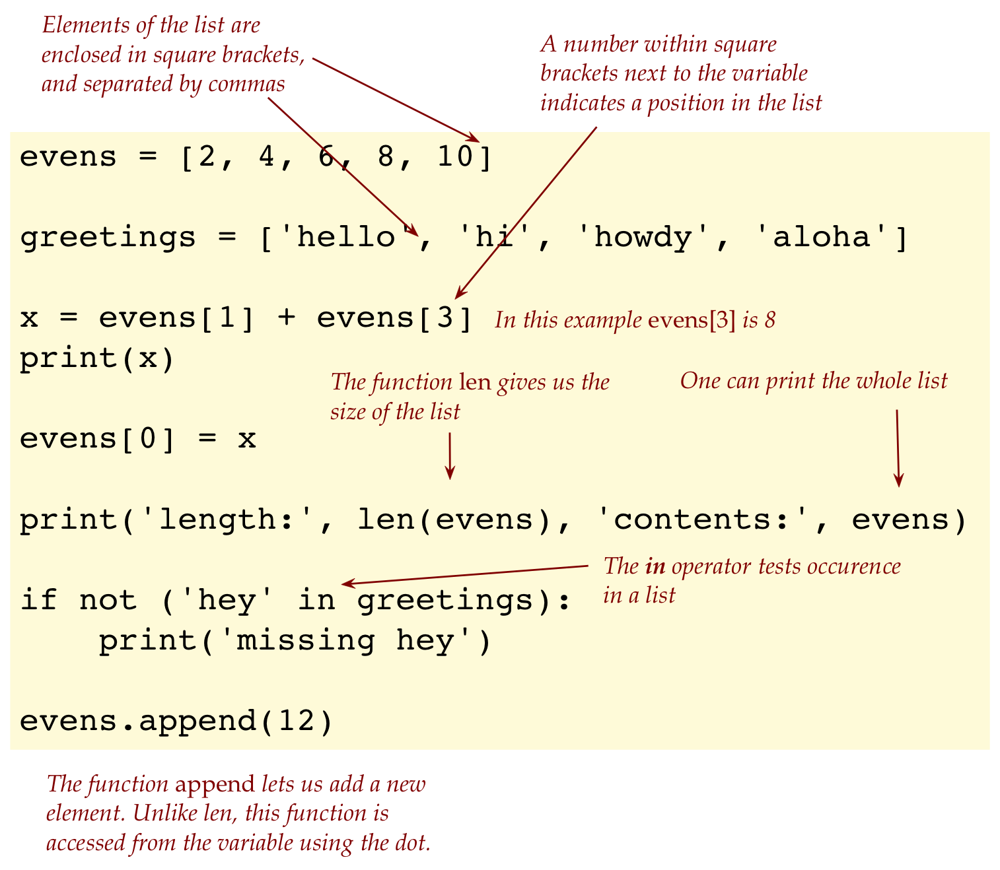
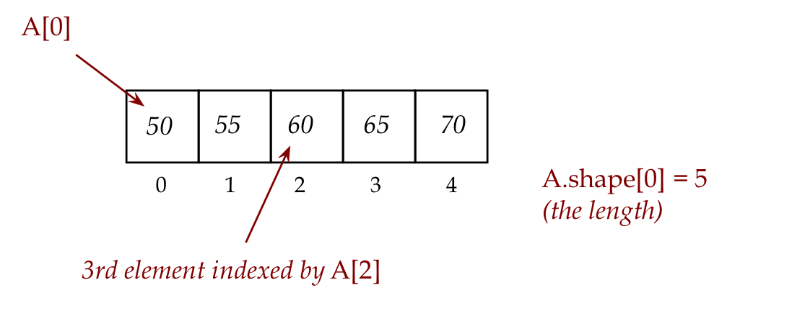
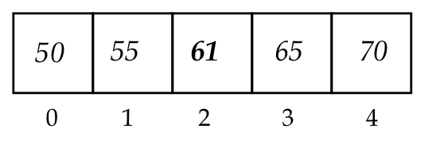
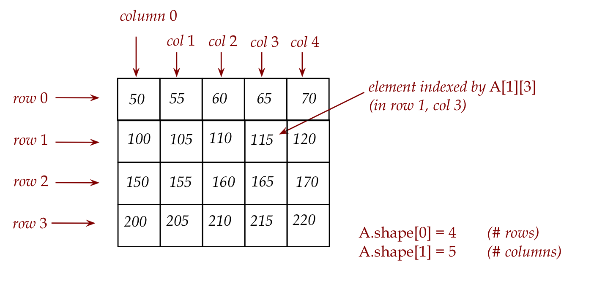
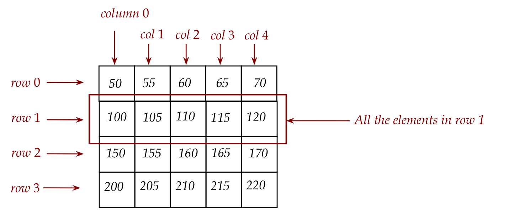
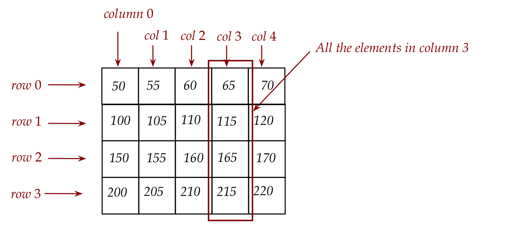
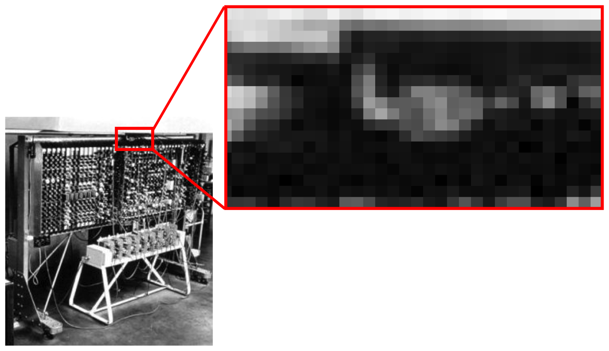
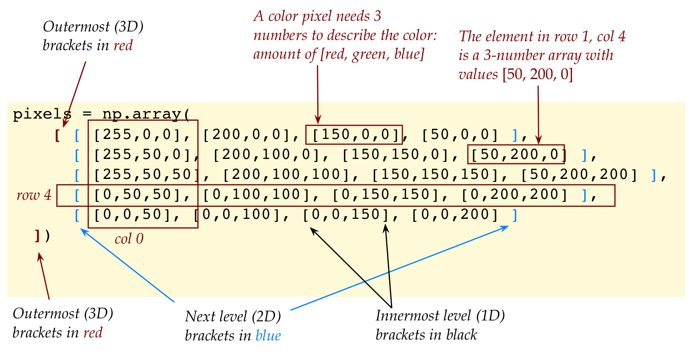
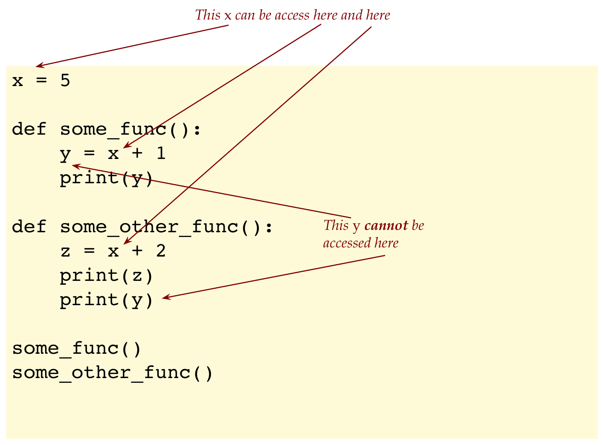

Module 0: Arrays, Tuples, Sets, and Dictionaries
Objectives
The goal of this module is to introduce the all important feature called arrays, of central importance in working with numeric data.
0.0 First, a list of lists
Recall a basic list:
# A list of numbers:```
evens = [2, 4, 6, 8, 10]
# A list of strings:```
greetings = ['hello', 'hi', 'howdy', 'aloha']
# Access list elements using square brackets and index```
x = evens[1] + evens[3]
print(x)
# We can change the value at an individual position```
evens[0] = x
# Recall: len() gives us the length of the list```
print('length:', len(evens), 'contents:', evens)
# Example of using in to search inside a list:```
if (not 'hey' in greetings):
print('missing hey')
# Add something new to the end of a list```
evens.append(12)
# Write code here to increment each element by 2```
print(evens)
# Should print: [12, 4, 6, 8, 10, 12]```Let’s recall a few things we learned about lists via this example: 
Why are lists useful?
The real power comes from being able to use a loop to
Create elements, as in:
for i in range(1, 10, 2): A.append(2*i)Perform some action on each element, as in:
for i in range(len(A)): A[i] = 2 * A[i]
And one can use multiple lists as well, as in:
for i in range(len(A)): B[i] = A[i] + 5Lists allow both index iteration as above but also content iteration:
total = 0 for k in A: total = total + k
As it turns out, we can make a list of lists.
That is, a list whose elements are themselves lists.
For example:
A = [ [2,4,6,8,10], [1,3,5,7,9] ]
x = A[1] # The 2nd element is a list
print(x) # Prints [1,3,5,7,9]
y = A[1][3] # 4-element of 2nd list
print(y) # 7
print(len(A)) # 2
print(len(A[0])) # 5The inner square brackets are used for the two lists contained in the one larger list:
A = [ [2,4,6,8,10], [1,3,5,7,9] ]And the outermost square brackets indicate the single list with two items:
A = [ [2,4,6,8,10], [1,3,5,7,9] ]A[1]refers to the 2nd element of the whole thing, which means A[1] is the 2nd inner list:A = [ [2,4,6,8,10],[1,3,5,7,9] ] x = A[1] # The 2nd element is a list print(x) # Prints [1,3,5,7,9]Since
A[1]is a list itself, we can access its elements using an additional set of square brackets:A = [ [2,4,6,8,10],[1,3,5,7,9] ] y = A[1][3] # 4-element of 2nd list print(y) # 7And the
len()function applied to the whole list will give 2, while applying it to one of the constituent lists will give that list’s length:print(len(A)) # 2 print(len(A[0])) # 5
Can one make a list of lists of lists?
Think of a single list as one dimensional:
A = [2, 4, 6, 8, 10] print(A[3])In a one-dimensional list, we need a single number to access a data value in the list:
print(A[3])And a list of lists as two dimensional:
A = [ [2,4,6,8,10], [1,3,5,7,9] ] print(A[0][2])In a two-dimensional list, we need two numbers to access a data value in the list:
print(A[0][2])Think of a list of lists of lists as three-dimensional, which means three numbers fix the position of a element.
For example:
A = [ [ [1,2], [3,4], [5,6] ], [ [7,8], [9,10], [11,12] ] ] print(A[0][2][1]) # Prints 6It’s a bit hard to see the list of lists of lists:
First, there’s the outermost list with two elements:
A = [ [ [1,2], [3,4], [5,6] ], [ [7,8], [9,10], [11,12] ] ]The first element of the outer list is A[0]
Then, looking inside A[0], we see a list of lists:
A = [ [ [1,2], [3,4], [5,6] ], [ [7,8], [9,10], [11,12] ] ]The third element of this is A[0][2]:
A = [ [ [1,2], [3,4], [5,6] ], [ [7,8], [9,10], [11,12] ] ]Which is the list[5,6]
And the 2nd element inside this list is A[0][2][1]:
A = [ [ [1,2], [3,4], [5, 6] ], [ [7,8], [9,10], [11,12] ] ]
So think of
A[0][2][1]:- Get the first outer list
A[0](which is a list) - Get the this list’s 3rd element A[0][2] (this produces a list)
- Get this last list’s 2nd element A[0][2][1].
- Get the first outer list
0.1 Arrays: a more efficient type of list
While lists are useful and easy to use, they are a bit inefficient “under the hood”:
- Very large lists (million elements and higher) can slow down a program.
- And a list-of-lists is even slower for large sizes, and takes up unneccessary extra space (compared to arrays).
- Some of the most compelling uses involve the array equivalent of a list-of-lists-of-lists: an image.
- As we will see, a regular color image will turn out to be a three dimensional array while a black-and-white image will turn out to be a two-dimensional array.
About arrays:
Arrays were created as a separate structure in Python to enable efficient processing of lists of numbers, especially multidimensional lists.
Because arrays are in a separate part of Python, the syntax around arrays is a bit different, for example:
A = np.array([1,2,3,4])Arrays constitute a large topic in Python, and its advanced features can be fairly complex.
Our goal here is only a light introduction so that we can work with images.
Let’s start with an example of a single dimensional array, the cousin of a plain list:
import numpy as np
A = np.array([1,2,3,4])
print(type(A)) # What does this print?
A[1] = 5 # Replace 2nd element
print(A) # [1 5 3 4]
print(A.shape[0]) # 4
print('len(A)=',len(A)) # 4
# A[4] = 9
# A.append(9)Let’s point out a few things:
To gain efficiency, arrays trade away some flexibility and ease of use.
For example, we now need to import this special package called
numpy:import numpy as npOnce we do this, the syntax for making an array with actual data is, as we’ve seen:
A = np.array([1,2,3,4])A brief aside on the Python keyword as:
We use as to create shortcuts.
We could write code like this:
import numpy A = numpy.array([1,2,3,4])The as keyword lets us create a short form.
We could have made it even shorter:
import numpy as n A = n.array([1,2,3,4])but this is frowned up on Python culture.
Over time, a sort-of convention about naming has taken place in Pythonworld.
Which is why you’ll see all example code using
numpy as np. End of digression.
Notice that that actual data is fed into
numpy'sarrayfunction as a list:import numpy as np A = np.array( [1,2,3,4] )The actual array so created is in fact in the variable
A.To work with elements in the array, we use square brackets with the variable
A:A[1] = 5 # Replace 2nd elementThe standard function
len()works as we expect:print('len(A)=',len(A))However, the array has a feature that is more general called shape:
print(A.shape[0]) # 4- At first this seems cumbersome, and for single-dimensional arrays, it is.
- But for multiple dimensions, it’s convenient to have the length of each dimension handy.
- This is what
shapehas. shape[0]has the first dimension (the length of the array along the first dimension).shape[1]has the length along the second-dimension, and so on.- Of course, for a single dimensional array, there’s only
shape[0].
One of the efficiency tradeoffs is that an array has a fixed size. Which means, to add a new element, we have to rebuild the array.
Thus, to add an element in the above example, we need to write:
A = np.append(A, 9) print(A) # [1 5 3 4 9]This creates a new array with the added element.
Typically most scientific applications do not change sizes on the fly, and so, this is not a serious restriction.
Numpy has powerful features that simplify manipulation of numeric arrays.
For example, consider:
import numpy as np
A = np.array([1, 2, 3])
B = np.array([4, 5, 6])
C = A + B # Direct element-by-element addition
print(C) # [5, 7, 9]
D = np.add(A, B) # The same, via the add() function in numpy
print(D) # [5, 7, 9]
E = B - A # Elementwise subtraction
print(E) # [3, 3, 3]Numpy also has a number of functions that act on arrays and return arrays, for example:
One can apply a function like square-root element-by-element:
A = np.array( [1, 4, 9, 16] ) B = np.sqrt(A) print(B) # [1. 2. 3. 4.]One of the most convenient is to have Numpy create an array with random elements, as in:
# Roll a die 20 times A = np.random.randint(1, 7, size=20)This produces an array of size 20 with each element randomly chosen from among the numbers 1,2,3,4,5,6.
- Numpy has its own random-generation tool:
np.random - This has a function
randint()that takes the desired range (inclusive of first, excluding last), and the desired size of the array.
- Numpy has its own random-generation tool:
One can also test membership using the in operator:
For example, suppose we roll a die 20 times and want to know whether a 6 occured:
python # Roll a die 20 times A = np.random.randint(1, 7, size=20) if 6 in A: print('Yes, there was a 6')
0.2 2D arrays
Here, 2D is short for two-dimensional.
Let’s begin with a conceptual depiction of a 1D (one-dimensional) array:
First, suppose we create an array of 5 numbers as in:
A = np.array([50, 55, 60, 65, 70])A convenient way to visualize this is to draw these numbers in a series of adjacent “boxes” as in: 
Because we need a way to use our keyboard to enter elements, we use a particular kind of syntax, comma-separation with square-brackets to specify the elements.
We use a similar type of syntax to access a particular element in this array, as in:
print(A[2])We can also change an element in an array:
A[2] = 61which will result in the visualization

To explain how a 2D array works, let’s start with its conceptual visualization, via an example:
Consider this visualization of a 2D array: 
We use the term row to describe the contents going across one of the series of boxes going left to right: 
And the term column (shortened to col in our pictures) to describe the series of boxes going vertically top to bottom: 
Observe:
- The number of elements in a row is the number of columns.
- The number of elements in a column is the number of rows.
Again, because our limited keyboard doesn’t let us draw boxes, we need a way to type in a 2D array. We do so by writing out a 2D array as a series of comma-separated rows:
A = np.array([ [50, 55, 60, 65, 70], [100, 105, 110, 120, 125], [150, 155, 160, 165, 170], [200, 205, 210, 215, 220] ])Here, we’ve added whitespace (that’s allowed) to line up the rows so that it’s as close to our visual understanding as possible.
To access a particular element, we need the row number and column number, as in:
print(A[1,3]) # NOT A[1][3]Important: Unlike a list-of-lists, arrays use comma separation and not box-separation. For comparison:
# List of lists: X = [ [2,4,6,8,10], [1,3,5,7,9] ] print(X[0][2]) # 2D array: X = np.array([ [2,4,6,8,10], [1,3,5,7,9] ]) print(X[0,2])Unfortunately, arrays allow box-separation as well (for access) but this causes problems in other array operations (slicing): so please use comma-separation with a single set of square brackets for arrays.
Just as we used a for-loop for a single array, it is very typical to use a nested for-loop for a 2D array:
For comparison, let’s look at a 1D array:
A = np.array( [1, 4, 9, 16] ) for i in range(A.shape[0]): # Recall: A.shape[0] is the size print(A[i])The equivalent for a 2D array is:
A = np.array([ [50, 55, 60, 65, 70], [100, 105, 110, 120, 125], [150, 155, 160, 165, 170], [200, 205, 210, 215, 220] ]) for i in range(A.shape[0]): # number of rows for j in range(A.shape[1]): # number of columns print(A[i,j])To make the code a bit more readable, we could write
num_rows = A.shape[0] num_cols = A.shape[1] for i in range(num_rows): for j in range(num_cols): print(A[i,j])
About 2D arrays:
- Although our examples show arrays of integers, the Numpy package supports a wide variety of data types, including floats, chars, strings and such.
- There are even specially “compacted” versions of integers to enable working with extremely large arrays.
- There are two common (and quite different) uses of 2D arrays:
- One is for a mathematical construct called a matrix, which you’d learn in a course called linear algebra.
- The other is for images, which we’ll look at next.
0.3 A greyscale image is really a 2D array of integers
Consider the following program:
from drawtool import DrawTool
import numpy as np
dt = DrawTool()
dt.set_XY_range(0,10, 0,10)
dt.set_aspect('equal')
greypixels = np.array([ [50, 55, 60, 65, 70],
[100, 105, 110, 120, 125],
[150, 155, 160, 165, 170],
[200, 205, 210, 215, 220] ])
dt.set_axes_off()
dt.draw_greyimage(greypixels)
dt.display()What is a greyscale image?
By greyscale, we mean black-and-white (no colors) but more specifically (and typically) 256 shades of grey.
Consider this illustration showing an image on the left with a small part of it zoomed in: 
Any digital image is really a 2D arrangement of small squares called pixels, in rows and columns (just like an array).
In a greyscale image, each pixel is colored a shade of grey.
In standard greyscale images, there are 256 shades of grey numbered 0 through 255 where 0 is black, and 255 is white.
Now let’s go back to the code and examine what we wrote:
greypixels = np.array([ [50, 55, 60, 65, 70], [100, 105, 110, 120, 125], [150, 155, 160, 165, 170], [200, 205, 210, 215, 220] ])- The first number (50) is a shade of dark grey (almost black).
- The next number (55) along that row specifies a slightly lighter (but still quite dark) shade of grey.
- Now consider 200, the first number in the 4th row: this is a shade of light grey, while 220 at the end is nearly white.
Thus, a greyscale image is nothing but a 2D array of integers whose values range between 0 and 255 (inclusive).
Our eyes are fooled into seeing a seamless image because of high resolution. Whereas our eye can see the individual pixels in the example above, a regular image has thousands of pixels, which is enough to fool the eye.
In a color image, as we will later see, we’ll need three numbers for each pixel (the amounts of red, green, blue).
About the greyscale machine pictured above:
- This is an image of the ACE computer, one of the world’s earliest computers, designed by none other than Alan Turing, computer science pioneer and WWII hero.
- To give you a sense of how primitive these were, your laptop with 8GB RAM has more than 60 million times the memory of the ACE. And yet, the ACE was a landmark technological wonder at its time.
Let’s now work with an actual image:
from drawtool import DrawTool
import numpy as np
dt = DrawTool()
dt.set_XY_range(0,10, 0,10)
dt.set_aspect('equal')
greypixels = dt.read_greyimagefile('eniac.jpg')
# greypixels is a 2D array
dt.set_axes_off()
dt.draw_greyimage(greypixels)
dt.display()
# Add code to print the number of rows, number of columns
# Should print: rows = 189 columns = 267{kind=link}
Image formats:
- When an image is stored as a file, the file needs to contain all the integers that comprise the 2D array (for greyscale images)
- Large images can take quite a bit of space. For example, a 1000-row x 1000-column image will have one million pixels.
- Yet many images have vast expanses of the same color or intensity and they offer a chance to compress (use less space by being clever).
- Image formats arose as a result of wanting to both compress the storage and to store meta-info about images.
- Popular formats include: JPG, PNG, TIFF and Bitmap.
- Typically the last part of the filename (the “.jpg” in “eniac.jpg”) tells you the format.
- Python provides a way of reading from these formats so that we don’t have to worry about the details.
Let’s now modify a greyscale image:
from drawtool import DrawTool
import numpy as np
dt = DrawTool()
dt.set_XY_range(0,10, 0,10)
dt.set_aspect('equal')
greypixels = dt.read_greyimagefile('eniac.jpg')
greypixels2 = np.copy(greypixels)
num_rows = greypixels2.shape[0]
num_cols = greypixels2.shape[1]
lightness_factor = 10
for i in range(num_rows):
for j in range(num_cols):
value = greypixels[i,j] + lightness_factor
if value > 255:
value = 255
greypixels2[i,j] = value
dt.set_axes_off()
dt.draw_greyimage(greypixels2)
# To save an image, use the save_greyimage() function:
# dt.save_greyimage(greypixels2,'eniac-light.jpg')
dt.display(){kind=link}
0.4 A color image is a 3D array of integers
About color images:
- In a color image, each pixel will have a color instead of a “greyness” factor.
- Unfortunately, one cannot easily represent colors with a single number.
- There are many ways of using multiple numbers to encode colors.
- We’ll use the most popular one: specify the strengths of the three primary colors (Red, Green, Blue).
- This approach is so popular that we refer to it simply as RGB.
- The “amount” of red is a number between 0 and 255, the amount of green is another such number, as is the amount of green.
- Thus, each color is a triple of numbers, for example:
- (255,0,0) is all red (no green, no blue)
- (0,255,0) is all green (no red, no blue)
- (0,0,255) is all blue (no red, no green)
- (255,0,0) is all red (no green, no blue)
- Let’s try a few more:
- (255,255,0)
- (100,255,255)
- (200,200,200)
(grey is R,G,B all equal)
- (0,0,0)
- (255,255,255) is white
- (255,255,0)
When each pixel needs three numbers and there’s a grid of pixels, how do we store the numbers?
- We use a small array (of size 3) to store the triple.
- Then each pixel in the 2D array of pixels will have an array of size 3.
- This is a 3D array!
Let’s look at an example:
from drawtool import DrawTool
import numpy as np
dt = DrawTool()
dt.set_XY_range(0,10, 0,10)
dt.set_aspect('equal')
pixels = np.array(
[ [ [255,0,0], [200,0,0], [150,0,0], [50,0,0] ],
[ [255,50,0], [200,100,0], [150,150,0], [50,200,0] ],
[ [255,50,50], [200,100,100], [150,150,150], [50,200,200] ],
[ [0,50,50], [0,100,100], [0,150,150], [0,200,200] ],
[ [0,0,50], [0,0,100], [0,0,150], [0,0,200] ]
])
dt.set_axes_off()
dt.draw_image(pixels)
dt.display()Let’s point out the structure inherent in the above 3D array: 
Next, let’s work with actual color images with an example application: converting color to greyscale:
from drawtool import DrawTool
import numpy as np
dt = DrawTool()
dt.set_XY_range(0,10, 0,10)
dt.set_aspect('equal')
# The image file is expected to be in the same folder
pixels = dt.read_imagefile('washdc.jpg')
num_rows = pixels.shape[0]
num_cols = pixels.shape[1]
greypixels = dt.make_greypixel_array(num_rows, num_cols)
for i in range(num_rows):
for j in range(num_cols):
# Average of red/green/blue
avg_rgb = (pixels[i,j,0] + pixels[i,j,1] + pixels[i,j,2]) / 3
# Convert to int
value = int(avg_rgb)
greypixels[i,j] = value
dt.set_axes_off()
dt.draw_greyimage(greypixels)
# Notice: saving to a different image format (PNG):
dt.save_greyimage(greypixels, 'washdc-grey.png')
dt.display(){kind=link}
Next, consider the following program:
from drawtool import DrawTool
import numpy as np
dt = DrawTool()
dt.set_XY_range(0,10, 0,10)
dt.set_aspect('equal')
pixels = dt.read_imagefile('washdc.jpg')
num_rows = pixels.shape[0]
num_cols = pixels.shape[1]
for i in range(num_rows):
for j in range(num_cols):
if ( (pixels[i,j,1] > pixels[i,j,0])
and (pixels[i,j,2] < 0.5*pixels[i,j,1]) ):
pixels[i,j,0] = 0
pixels[i,j,1] = 0
pixels[i,j,2] = 255
dt.set_axes_off()
dt.draw_image(pixels)
dt.display()What did we just do?
- We are examining the R,G,B values for each pixel, to see if the condition (G > R) and (B < G) is satisfied.
- When the condition is satisfied, we are overwriting the pixel with a new (all blue) color.
- What we’re trying to do is identify greenery by asking: when do we have the Green value a bit larger than the Red value and much larger than the Blue value?
- Why is this useful? This is essentially what many satellite-image applications do: identify areas of interest for urban planning, crop surveys, environmental assessment (think: rainforest), and so on.
- Notice that this rule does not capture all greenery.
0.5 Arrays and slicing
Slicing can be applied to arrays in the same way that we used them earlier for lists with one major difference, as we’ll point out.
For example:
import numpy as np
print('list slicing')
A = [1, 4, 9, 16, 25, 36]
B = A[1:3] # B has [4, 9]
print(B)
B[0] = 5 # B now has [5, 9]
print(B)
print(A) # What does this print?
print('array slicing')
A = np.array( [1, 4, 9, 16, 25, 36] )
B = A[1:3] # B "sees" [4, 9]
print(B)
B[0] = 5 # What happens now?
print(B)
print(A) # What does this print?Let’s explain:
The slicing expression
1:3inA[1:3]refers to all the elements from position 1 (inclusive) to just before position 3 (so, not including position 3).With lists, a new list is created with these elements:
A = [1, 4, 9, 16, 25, 36] B = A[1:3]So, writing into the new list (B) does not affect the old list (A) from which the slice was taken.
But with arrays, a slice is only a view as if we were giving a name to a zoomed-in-part:
A = np.array( [1, 4, 9, 16, 25, 36] ) B = A[1:3]Here, array B refers to the segment (that’s still in A) from positions 1 to 2.
This is why, if you make a change to B, you are actually changing A.
Why did they do this?
- The reason is, many image processing applications require working on parts of images.
- Then, with regular slicing, if we were to pull out parts and modify them, we’d have to write them back in.
- Slicing makes it convenient to write directly into parts of images.
Slicing is a big sub-topic so we’ll just point out a few useful things to remember via an example:
# Color image:
A = np.array(
[ [ [255,0,0], [200,0,0], [150,0,0], [50,0,0] ],
[ [255,50,0], [200,100,0], [150,150,0], [50,200,0] ],
[ [255,50,50], [200,100,100], [150,150,150], [50,200,200] ],
[ [0,50,50], [0,100,100], [0,150,150], [0,200,200] ],
[ [0,0,50], [0,0,100], [0,0,150], [0,0,200] ]
])
B = A[4:5,:,: ] # The last row
print(B)
C = A[:,1:2,:] # The second column
print(C)
D = A[:3,:2,:] # The pixels in rows 0-2 and cols 0-1
print(D)A different slice can be specified for each dimension of a multidimensional array.
When neither end of a slicing range is specified, that implies all the elements, as in:
B = A[4:5, :,: ] # The last rowHere, the stand-alone colons imply the whole range for the 2nd and 3rd array index positions.
It is possible to specify just one limit as in:
python D = A[:3, :2,:] # The pixels in rows 0-2 and cols 0-1 <In the first (row) case, we’re saying “all rows from the start up to row 2”.
Let’s apply slicing to creating a cropped image:
from drawtool import DrawTool
import numpy as np
dt = DrawTool()
dt.set_XY_range(0,10, 0,10)
dt.set_aspect('equal')
pixels = dt.read_imagefile('washdc.jpg')
# Crop from row 50 to 179, and column 50 to 199
pixels2 = pixels[50:180, 50:200]
dt.set_axes_off()
dt.draw_image(pixels2)
dt.display()0.6 Tuples
In this section and the ones that follow, we’ll touch lightly upon a few topics that are “not on the final exam” but will be useful in general.
Some of these concepts will be directly used in the next module.
Suppose we want to write a function that computes both the square and cube of a number:
One option is to write two separate functions
def square(x): return x*x def cube(x): return x*x*x x = 5 print(x, square(x), cube(x))We can alternatively write one function that computes and returns two things:
def do_both(x): square = x*x cube = square*x return (square, cube) x = 5 (y, z) = do_both(x) print(x, y, z)Notice that the return statement returns a pair of values:
return (square, cube)And that the pair is enclosed in parentheses.
And notice that, since two values are being returned, we need a pair to capture the return values:
(y, z) = do_both(x)We can go beyond a pair to any number of such “grouped” variables:
def do_more(x): square = x*x cube = square*x fourth = cube*x fifth = fourth*x return (square, cube, fourth, fifth) x = 5 (a, b, c, d) = do_more(x) print(x, a, b, c, d)Such a grouping of variables is called a tuple.
Tuples are similar to lists in many ways, but different in one crucial aspect:
First, let’s examine how to write the same
do_both()function above but using lists:def do_both_list(x): square = x*x cube = square*x return [square, cube] x = 5 [y, z] = do_both_list(x) print(x, y, z)This works just fine.
Another way in which a tuple is like a list is in using square-brackets and position indices to access individual elements, as in:
# List version: L = do_both_list(x) print(L[0], L[1]) # L[0] has the square, L[1] has the cube # Tuple version: t = do_both(x) print(t[0], t[1]) # t[0] has the square, t[1] has the cubeHowever, here’s the difference:
# List version: L = do_both_list(x) L[0] = 0 # This is allowed # Tuple version: t = do_both(x) t[0] = 0 # This is NOT allowedThus, you can replace a list element but you cannot replace a tuple element.
This is in fact a bit subtle, as this example shows:
x = 3 y = 4 t = (x, y) # The tuple's value is now fixed. print(t) # (3, 4) x = 2 print(t) # (3, 4)Once the tuple is instantiated (that’s the technical term for “made”) then the tuple’s value cannot be changed.
You can of course assign a different tuple value to a tuple variable as in:
t = (1, 2) print(t) t = (3, 4) print(t)Here, we’re simply replacing one fixed-value tuple with another.
Tuples are therefore said to be an immutable type (along with strings).
Why use tuples at all? It’s to allow programmers to signal clearly that their tuples shouldn’t be changed.
This turns out to be convenient for mathematical tuples (like points on a graph), which are similar.
Groups of tuples can be combined into lists and other data structures.
It’s very useful in working with points (the mathematical point you draw with coordinates) and other mathematical structures that need more than one number to describe.
For example, here’s a program that, given a list of points, finds the leftmost point (the one with the least x value).
def leftmost(L):
leftmost_guess = L[0]
for q in L:
if q[0] < leftmost_guess[0]:
leftmost_guess = q
return leftmost_guess
list_of_points = [(3,4), (1,2), (3,2), (4,3), (5,6)]
(x,y) = leftmost(list_of_points)
print('leftmost:', (x,y) )
# leftmost: (1, 2)0.7 Sets
The general mathematical term set means a “collection of like things but without duplicates”.
Python has special syntax and operations to support this mathematical notion:
Here are two sets being defined:
A = {2, 4, 5, 6, 8} # Curly brackets B = {'hello', 'hi', 'hey', 'howdy'}The first set contains five numbers, whereas the second contains four strings.
Consider this variation
A = {2, 4, 5, 6, 8}
B = {'hello', 'hi', 'hey', 'howdy'}
C = {8, 5, 4, 6, 2, 4, 5, 5}
print(C)
if A == C:
print('they are equal')
else:
print('they are not equal')Given what we’ve said about sets, what will be printed?
Even though a set may not have duplicates, we are actually allowed to try to create duplicates:
C = {8, 5, 4, 6, 2, 4, 5, 5}Python simply removes the duplicates.
Python also organizes sets so that sets can be compared for equality: Thus, printing the set
C = {8, 5, 4, 6, 2, 4, 5, 5}actually results in
{2, 4, 5, 6, 8}
What can we do with sets?
The most common operation is to see whether some value is in some set we’ve defined using the keyword in:
def check_vowel(x): vowels = {'a','e','i','o','u'} if x in vowels: print(x, 'is a vowel') else: print(x, 'is not a vowel') check_vowel('a') check_vowel('b')Other, more mathematical operations, feature different ways of combining sets. For example:
A = {2, 4, 5, 6, 8} B = {1, 3, 5, 6} D = A | B # union print(D)Here, D contains every element across both sets.
Other such operators include:
- intersection (elements that are in both sets)
- difference (elements in one set that are not in the other)
Since our goal is merely to give you a taste of these advanced topics, we won’t say much more about these operations.
Instead, let’s look at an application:
- In text processing, the term stopword is often used to describe commonly used words that serve little or no purpose in text analysis:
- When you analyze digitized texts for meaning, topic and dialogue (for example), words like “the”, “of”, “and” get in the way of analysis.
- They are often discarded from text analysis that seeks to analyze more significant words.
- We’ll ask the question: what proportion of text typically consists of stopwords?
(The answer is surprising, as we’ll see). - To answer the question, we’ll scan text word-by-word and see if each word is in the set of stopwords.
- Although there are hundreds of stopwords, we’ll keep things simple by targeting a few.
Let’s write this up:
import wordtool as wt
# The 25 most common stopwords
stopwords = {'the','be','to','of','and','a','in','that','have','I',
'it','for','not','on','with','he','she','you','do','as',
'at','his','her','they','by'}
wt.open_file_byword('alice.txt')
s = wt.next_word()
num_stopwords = 0
total_words = 0
while s != None:
if s in stopwords:
num_stopwords += 1 # Count stopwords
total_words += 1 # And all words
s = wt.next_word()
percent_stopwords = 100 * (num_stopwords/total_words)
# Compare this:
string_to_print = '% of stopwords:{0:.2f}'.format(percent_stopwords)
print(string_to_print)
# to this:
# print(percent_stopwords)As an aside, we’ll point out something about string formatting, which is also an advanced topic:
It’s plain ugly (and often useless) to print out all the digits in a floating number like:
% of stopwords: 31.969357958208498Instead, we’d like
% of stopwords: 31.97Specifying to Python how you’d like a number formatted, unfortunately, is a bit of a chore using somewhat cryptic commands embedded within strings:
string_to_print = '% of stopwords:{0:.2f}'.format(percent_stopwords) print(string_to_print)We’ll explain this one with the understanding that a proper look into this topic is beyond the scope of this course:
First, one builds the target strings using typical quotes, as in:
string_to_print = '% of stopwords: 'Then, attach the format function with the desired variable whose value we wish to print nicely:
string_to_print = '% of stopwords: '.format(percent_stopwords)Then, figure out where in the string you want the resulting number and use curly brackets:
string_to_print = '% of stopwords: {0}'.format(percent_stopwords)Here, 0 means the first such number. If had a second number, we’d use 1, and so on.
Finally, specify both how many digits after the decimal point, and that this number is a float:
string_to_print = '% of stopwords: {0:.2f}'.format(percent_stopwords)
Yes, a bit cryptic and difficult to understand. But eventually, when you get used to it, it’s powerful when you are doing a lot of text output.
0.8 Dictionaries
Consider this problem:
We have a data file that looks like this:
apple banana apple pear banana banana apple kiwi orange orange orange kiwi orangeThis might represent, for example, a record of sales at a fruit stand.
We’d like to count how many of each fruit.
One way would be to define a counter for each kind:
num_apples = 0 num_bananas = 0 num_pears = 0 num_kiwis = 0 num_oranges = 0 with open('fruits.txt','r') as data_file: line = data_file.readline() while line != '': fruit = line.strip() if fruit == 'apple': num_apples += 1 elif fruit == 'banana': num_bananas += 1 elif fruit == 'pear': num_pears += 1 elif fruit == 'kiwi': num_kiwis += 1 elif fruit == 'orange': num_oranges += 1 else: print('unknown fruit:', fruit) line = data_file.readline() print('# apples:', num_apples) print('# bananas:', num_bananas) print('# pears:', num_pears) print('# kiwi:', num_kiwis) print('# oranges:', num_oranges)
Aside from being tedious, this approach has other issues:
- One would like to be able to write a general program that does not need to know which fruits are in a file.
- What if there were a thousand different kinds of items (not fruits, say, but department-store items)?
- A single mistake in a variable can cause the counts to be wrong.
Fortunately, the use of dictionaries will make it easy:
# Make an empty dictionary
counters = dict()
with open('fruits.txt','r') as data_file:
line = data_file.readline()
while line != '':
fruit = line.strip()
if fruit in counters.keys():
# If we've seen the fruit before, increment.
counters[fruit] += 1
else:
# If this is the first time, set the counter to 1
counters[fruit] = 1
line = data_file.readline()
print(counters)Now let’s explain:
A dictionary is a technical term that is only somewhat related to an actual English dictionary.
Think of an English dictionary as something where you look up a word and receive its meaning.
They operations here are look up and receive an associated value (the word’s meaning, in this case).
In Python, a dictionary is a structure that lets you associate one kind of data with another.
The technical equivalent of a word is called a key and the equivalent of the meaning is called the value.
So, a dictionary is a collection of key-value pairs.
Here’s an example:
d = {'apple': 3, 'banana': 3, 'pear': 1, 'kiwi': 2, 'orange': 4}In this case, we’re associating
- The value 3 with the key ‘apple’
- The value 3 with the key ‘banana’
- The value 1 with the key ‘pear’
- The value 2 with the key ‘kiwi’
- The value 4 with the key ‘orange’
Conveniently, Python allows array indexing using the key:
d = {'apple': 3, 'banana': 3, 'pear': 1, 'kiwi': 2, 'orange': 4} print(d['apple']) # Prints 3 d['banana'] = 0 # Which changes the value associated with 'banana' to 3The above is an example of a dictionary that’s already built (after we’ve processed the data).
To process data on-the-fly, we need an additional operation that an English dictionary does not really have: we need to be able to add something that’s not already there.
To add a new key, we simply use it as an index:
d = {'apple': 3, 'banana': 3, 'pear': 1, 'kiwi': 2, 'orange': 4} d['plum'] = 0With this understanding we can now revisit the code in the fruit example:
We’ve seen how to read a file line-by-line before
with open('fruits.txt','r') as data_file: line = data_file.readline() while line != '': fruit = line.strip() # Remove whitespace on either side # This is where we'd do something with the datda line = data_file.readline() # Get the next lineThe rest is merely the dictionary part:
with open('fruits.txt','r') as data_file: line = data_file.readline() while line != '': fruit = line.strip() # Remove whitespace on either side if fruit in counters.keys(): # If we've seen the fruit before, increment. counters[fruit] += 1 else: # If this is the first time, set the counter to 1 counters[fruit] = 1 line = data_file.readline() # Get the next line
0.9 Advanced topic: global variables
Suppose we have the following application:
We prompt the user to enter the parameters (the coordinates of the center, and radius) of circle that needs to be drawn.
We do this repeatedly until the user is done (empty input) and then draw all the circles.
This is the kind of code we’d like to write:
# ... For brevity, we're not showing the import, setting up drawtool etc ... # Read circle data from the user: line = input('Enter circle parameters: ') while line != '': process_line(line) line = input('Enter circle parameters: ') # A method that'll access the list of circles draw_circles() dt.display()What we’ll do is have a list of circles:
# The list of circles circles = [] def process_line(line): # Code for extracting the center coordinates and radius # This will add to the list circles def draw_circles(): # Code for drawing the circles: will access the list circles line = input('Enter circle parameters: ') while line != '': process_line(line) line = input('Enter circle parameters: ') draw_circles() dt.display()Here, the variable
circlesis called a global variable because it can be access inside other functions defined in the file.So, what would be an example of a non-global variable?
Let’s fill out the code and see:
circles = [] # The global variable def process_line(line): parts = line.split() # parts is a local variable x = float(parts[0]) y = float(parts[1]) r = float(parts[2]) circle = (x,y,r) # We've used a tuple here! circles.append (circle) # Accessing global circles def draw_circles(): dt.set_color('b') for c in circles: # Accessing global circles dt.draw_circle(c[0], c[1], c[2]) line = input('Enter circle parameters: ') while line != '': process_line(line) line = input('Enter circle parameters: ') draw_circles() dt.display()
Let’s create a simpler example to illustrate:
Consider this:
x = 5 def some_func(): y = x + 1 print(y) def some_other_func(): z = x + 2 print(z) # print(y) # This would fail: we can't access y here some_func() # Prints 6 some_other_func() # Prints 7Let’s point out: 
Thus: to share variables across functions, define the variables outside the functions.
In which case they become global variables.
That would be the end of it, but there’s one more complication:
You cannot modify a global variable inside a function without explicitly stating an intention to do so.
So, suppose we wanted to modify x in the example:
x = 5 def some_func(): global x # Explicit statement of intent to modify x = x + 1 y = x + 1 print(y) def some_other_func(): z = x + 2 print(z) some_func() # Prints 7 some_other_func() # Prints 8
Now let’s go back to the circle-drawing example to see an instance where modifying a global is useful:
Suppose we want to track the smallest circle (smallest radius) and draw that circle in red.
Thus, as we get user input line-by-line, we’ll need to update the smallest.
Here’s part of the code:
# For brevity, we're not showing the import, setting up drawtool etc # ... (stuff left out) ... # Global variable circles (a list) available to all functions circles = [] smallest_r = 10 smallest = None def process_line(line): global smallest_r, smallest # Identify globals being modified parts = line.split() x = float(parts[0]) y = float(parts[1]) r = float(parts[2]) circle = (x,y,r) if r < smallest_r: smallest_r = r # Modifying global smallest_r smallest = circle # Modifying global smallest circles.append (circle) # Accessing global circles def draw_circles(): # Fill in the code here to draw the smallest in red # and the other circles in blue. # The rest of the code is the same as before ... (read line by line etc)
0.10 Multiple files
Large Python applications consists of tens of thousands of lines of code.
Most such applications actually consist of hundreds of Python programs bundled together and where one program can call functions in another.
We’ve already seen examples with the use of drawtool and wordtool.
Why are applications broken into multiple files?
- One large file is unwieldy to understand and work with in an editor (imagine the scrolling difficult with a thousand lines).
- It’s much easier to separate out functionality and test each piece. Robustly tested programs can be left alone while refining those that need work.
- Separated functionality is useful in other projects.
- If one piece needs upgrading, you can upgrade just that part if it’s in a separate file.
Let’s build a simple example:
Suppose we put together a file called
my_math_functions.pywhich hasimport math pi = 3.141 def square(x): return x*x def cube(x): return x*x*x def distance(x1, y1, x2, y2): # Write your code hereThen in an another file called
my_math_application.pyyou could write:import my_math_functions as m x = 2 y = m.square(5) print(y) x2 = 3 y2 = m.cube(x2) print(y2) d = m.distance(x,y, x2, y2) print(d)Notice the
importstatement at the top of the file:import my_math_functions as mThis has the
importkeyword, the name of the other file, and a shortcut.If we did not have the shortcut, we’d have to write code like:
import my_math_functions x = 2 y = my_math_functions.square(5) print(y)Which is perfectly legit but a bit tedious.
To access something from another file, we use the dot (period):
y = m.square(5)One can access a variable in the other file as well.
python print(m.pi)
0.11 String formatting and numbers
Consider this program:
x = 0
for i in range(5):
print('i=', i, 'x=', x)
x += 0.1You observed output like:
i= 0 x= 0
i= 1 x= 0.1
i= 2 x= 0.2
i= 3 x= 0.30000000000000004
i= 4 x= 0.4Why the ugly output?
- There are really three questions here, the second of which is a bit subtle.
- The first one is: why doesn’t Python see that most of the other values are bring printed nice, so why not print
0.3instead of0.30000000000000004? - The second, more sutble one, is: our for-loop clearly wants to increment by 0.1, which means x should be 0.3 and not 0.30000000000000004.
- The third implied question is: how do we actually limit the number of digits printed after the decimal?
Let’s answer these questions:
Why doesn’t Python recognize unnecessary digits?
- This is because Python does not want to second guess the programmer’s intent.
- Maybe you do want the digits.
How did 0.3 become 0.30000000000000004?
- A computer’s memory has two kinds of limitations, and one “feature”.
- One: it cannot store beyond a certain accuracy (and computers differ based on their hardware).
- Two: when calculations are performed, this storage limitation forces some arithmetic to be slightly wrong (many digits after the decimal point).
- The “feature” is that computers store binary numbers, not our kind of decimal numbers. This means a decimal version of a binary number might have to be an approximation.
OK, how do we actually print nicely?
- This is a bit of an advanced topic, so we’ll only provide a simple example.
- The solution is to use a special set of formatting commands, like the ones you saw a long time ago (remember ?)
Here’s how it works for the above program:
x = 0
for i in range(5):
format_string = 'i = {0:2d} x = {1:.2f}'
string_to_print = format_string.format(i, x)
print(string_to_print)
x += 0.1Let’s explain:
A format string is the eventual desired string that needs to be printed but with some placeholders:
format_string = 'i = {0:2d} x = {1:.2f}'In this case, there are two placeholders:
format_string = 'i = {0:2d} x = {1:.2f}'Placeholders are enclosed in curly brackets.
Each placeholder begins with a number that will eventually determine which variable gets its value into the placeholder.
So, here we have variables 0 and 1:
format_string = 'i = {0:2d} x = {1:.2f}'We feed the values via the
format()function:format_string = 'i = {0:2d} x = {1:.2f}' string_to_print = format_string.format(i, x)This is what lets
format()put the value of i in place of the “0” and the value of x in place of the “1”.All that’s left to explain are the cryptic commands that follow the “0” and “1” respectively:
format_string = 'i = {0:2d} x = {1:.2f}'The first one says, in effect, “use a minimum of 2 spaces and expect an integer”. The second says “expect a float and restrict the number of post-decimal digits to 2”.
String formatting has more to it, but that’s all we’ll say about it here.
0.12 Randomness
As we’ve seen throughout the course, it is useful to be able to have Python generate random numbers:
- We use random numbers to answer statistical questions.
- Random numbers were also useful in creating patterns, as in art.
However, there’s an important thing to know about random generation.
Consider this program:
import random
#random.seed(123)
for i in range(5):
x = random.uniform(1.0, 10.0)
print(x)How random generation works:
- Python uses a mathematical function with a so-called “seed” to produce random numbers.
- The numbers aren’t really random, because a particular seed will produce the same numbers, which is why they’re called pseudorandom numbers.
- However, if we’re doing things like computing averages, a pseudorandom sequence, provided it’s long enough, is a reasonably good approximation.
- Is there ever a reason to fix a seed?
- Turns out, yes. It’s very useful for debugging.
- Using a seed causes your program to be repeatable (with the same pseudorandom sequence).
- So, typically, one uses a seed when getting your program to work.
- After it’s working, you can comment out the seed.
- If a seed is not provided, Python uses the local time or something like that as the seed, so that repeated runs produce different results.
0.13 What else is there in Python?
Our goal in this almost-final module was to:
- Introduce the all-important topic of arrays.
- Lightly sketch a few advanced topics to introduce ideas and show some examples, without expecting mastery of all the details.
In the next module, we will dive into examples from across the disciplines. Some of these advanced topics will be useful
So, one might ask: what’s left in Python to learn?
Quite a bit it turns out:
- Like many modern programming languages, Python is large enough that one needs a few courses to experience all of it.
- Some concepts are advanced enough to need weeks to cover (example: objects).
- Others need a background in data structures to understand how they work (example: dictionaries).
- Yet others involve library functions and external packages.
Do you need to learn more? Is what we’ve learned enough to achieve a good deal?
We’ll have more to say about this in a later module.